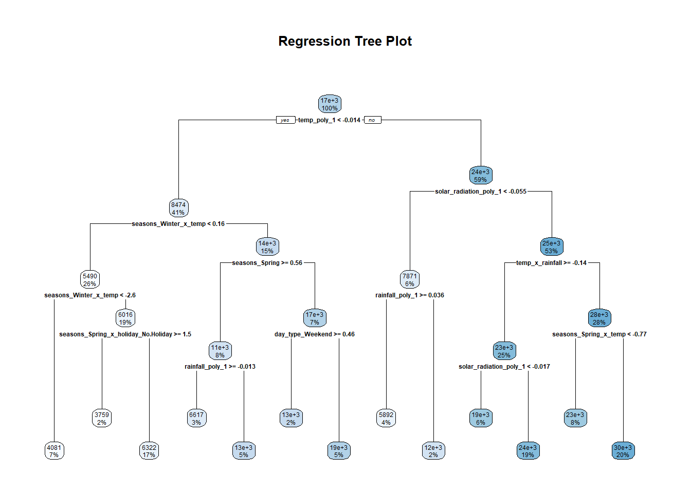
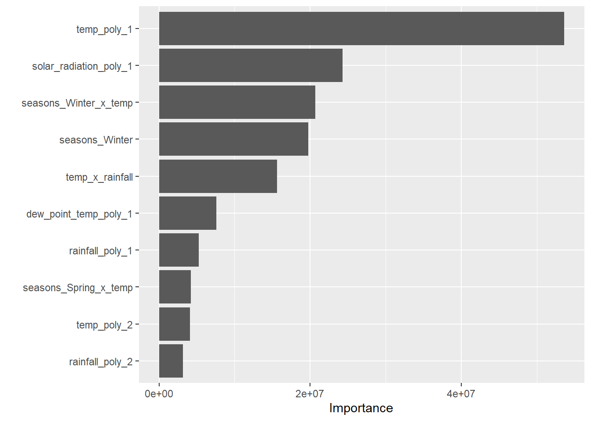
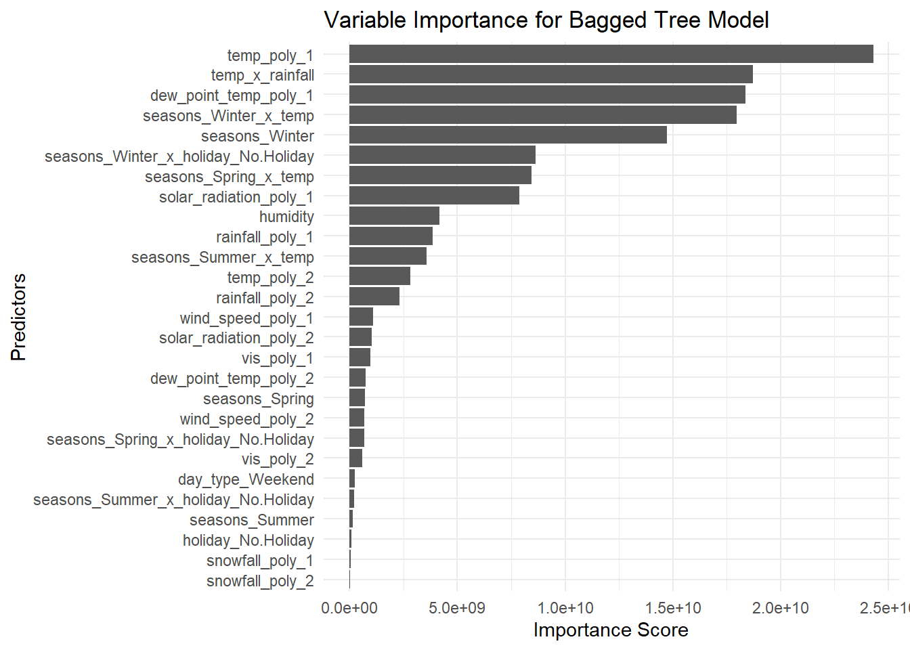

library(tidyverse)
library(tidymodels)
library(baguette)
library(doParallel)
library(vip)
library(rpart.plot)
library(broom)
library(iml)
set.seed(11)
bike_data <- read_csv("https://www4.stat.ncsu.edu/~online/datasets/SeoulBikeData.csv",
locale = locale(encoding = "latin1"))HW9
Consolidated Data Manipulations From HW8
bike_data <- bike_data |>
mutate(
date = lubridate::dmy(Date),
seasons = factor(Seasons),
holiday = factor(Holiday),
fn_day = factor(`Functioning Day`)
) |>
select(-Date, -Seasons, -Holiday, -`Functioning Day`) |>
rename(
bike_count = `Rented Bike Count`,
hour = Hour,
temp = `Temperature(°C)`,
wind_speed = `Wind speed (m/s)`,
humidity = `Humidity(%)`,
vis = `Visibility (10m)`,
dew_point_temp = `Dew point temperature(°C)`,
solar_radiation = `Solar Radiation (MJ/m2)`,
rainfall = `Rainfall(mm)`,
snowfall = `Snowfall (cm)`
) |>
filter(fn_day == "Yes") |>
group_by(date, seasons, holiday) |>
summarize(
bike_count = sum(bike_count),
temp = mean(temp),
humidity = mean(humidity),
wind_speed = mean(wind_speed),
vis = mean(vis),
dew_point_temp = mean(dew_point_temp),
solar_radiation = mean(solar_radiation),
rainfall = sum(rainfall),
snowfall = sum(snowfall),
.groups = "drop"
)
glimpse(bike_data)Rows: 353
Columns: 12
$ date <date> 2017-12-01, 2017-12-02, 2017-12-03, 2017-12-04, 2017-…
$ seasons <fct> Winter, Winter, Winter, Winter, Winter, Winter, Winter…
$ holiday <fct> No Holiday, No Holiday, No Holiday, No Holiday, No Hol…
$ bike_count <dbl> 9539, 8523, 7222, 8729, 8307, 6669, 8549, 8032, 7233, …
$ temp <dbl> -2.45416667, 1.32500000, 4.87500000, -0.30416667, -4.4…
$ humidity <dbl> 45.87500, 61.95833, 81.54167, 52.50000, 36.41667, 70.7…
$ wind_speed <dbl> 1.5375000, 1.7125000, 1.6125000, 3.4500000, 1.1083333,…
$ vis <dbl> 1870.7500, 1471.0833, 455.7500, 1362.8333, 1959.4583, …
$ dew_point_temp <dbl> -13.5458333, -5.7166667, 1.8833333, -9.9250000, -17.42…
$ solar_radiation <dbl> 0.24875000, 0.26375000, 0.12541667, 0.28291667, 0.0358…
$ rainfall <dbl> 0.0, 0.0, 4.0, 0.1, 0.0, 1.3, 0.0, 0.0, 0.0, 4.1, 0.0,…
$ snowfall <dbl> 0.0, 0.0, 0.0, 0.0, 0.0, 8.6, 10.4, 0.0, 0.0, 32.5, 0.…Data Split
bike_split <- initial_split(bike_data,
prop = 0.75,
strata = seasons)
bike_train <- training(bike_split)
bike_test <- testing(bike_split)
bike_folds <- vfold_cv(bike_train, v = 10)For all models, fit_resamples() and tune_grid() functions are applied to the bike_folds. This ensures all tuning and fitting is performed on the training set.
Best Model From HW8
Recipe (Model 3 with Interactions and Polynomials)
MLR_rec3 <- recipe(bike_count ~ ., data = bike_train) |>
step_date(date, features = "dow") |>
step_mutate(day_type = factor(
if_else(date_dow %in% c("Sat", "Sun"), "Weekend", "Weekday"))) |>
step_rm(date, date_dow) |>
step_dummy(seasons, holiday, day_type) |>
step_normalize(all_numeric_predictors()) |>
step_interact(terms = ~ starts_with("seasons") * starts_with("holiday") +
starts_with("seasons") * temp +
temp * rainfall) |>
step_poly(temp, wind_speed, vis, dew_point_temp, solar_radiation, rainfall, snowfall, degree = 2)MLR Spec, Workflow, and Fit
# Ensure we have RMSE and MAE metrics
metrics <- metric_set(rmse, mae)
MLR_spec <- linear_reg() |>
set_engine("lm")
MLR_workflow <- workflow() |>
add_recipe(MLR_rec3) |>
add_model(MLR_spec)
MLR_CV_fit <- fit_resamples(MLR_workflow,
resamples = bike_folds,
metrics = metrics)
MLR_final_fit <- last_fit(MLR_workflow,
split = bike_split,
metrics = metrics)New Models
LASSO
lasso_spec <- linear_reg(penalty = tune(),
mixture = 1) |>
set_engine("glmnet")
lasso_grid <- grid_regular(penalty(range = c(-3, 0)),
levels = 10)
lasso_workflow <- workflow() |>
add_recipe(MLR_rec3) |>
add_model(lasso_spec)
lasso_res <- tune_grid(
lasso_workflow,
resamples = bike_folds,
grid = lasso_grid,
metrics = metrics,
# For Parallel Processing
control = control_grid(parallel_over = "everything")
)
best_lasso <- select_best(lasso_res,
metric = "rmse")
final_lasso <- finalize_workflow(lasso_workflow,
best_lasso)
lasso_test <- last_fit(final_lasso,
split = bike_split,
metrics = metrics)Decision Tree
tree_spec <- decision_tree(cost_complexity = tune(),
tree_depth = tune()) |>
set_engine("rpart") |>
set_mode("regression")
tree_grid <- grid_regular(cost_complexity(),
tree_depth(),
levels = 10)
tree_workflow <- workflow() |>
add_recipe(MLR_rec3) |>
add_model(tree_spec)
tree_res <- tune_grid(
tree_workflow,
resamples = bike_folds,
grid = tree_grid,
metrics = metrics,
# For Parallel Processing
control = control_grid(parallel_over = "everything")
)
best_tree <- select_best(tree_res,
metric = "rmse")
final_tree <- finalize_workflow(tree_workflow,
best_tree)
tree_test <- last_fit(final_tree,
split = bike_split,
metrics = metrics)Bagged Tree
bagged_tree_spec <- bag_tree(cost_complexity = tune(),
tree_depth = tune()) |>
set_engine("rpart", times = 50) |>
set_mode("regression")
bagged_tree_grid <- grid_regular(cost_complexity(),
tree_depth(), levels = 10)
bagged_tree_workflow <- workflow() |>
add_recipe(MLR_rec3) |>
add_model(bagged_tree_spec)
bagged_tree_res <- tune_grid(
bagged_tree_workflow,
resamples = bike_folds,
grid = bagged_tree_grid,
metrics = metrics,
# For Parallel Processing
control = control_grid(parallel_over = "everything")
)
best_bagged_tree <- select_best(bagged_tree_res,
metric = "rmse")
final_bagged_tree <- finalize_workflow(bagged_tree_workflow,
best_bagged_tree)
bagged_tree_test <- last_fit(final_bagged_tree,
split = bike_split,
metrics = metrics)Random Forest
rf_spec <- rand_forest(mtry = tune(),
trees = 500,
min_n = tune()) |>
set_engine("ranger",
importance = "permutation") |>
set_mode("regression")
rf_grid <- grid_regular(mtry(range = c(1, 10)),
min_n(range = c(2, 10)),
levels = 10)
rf_workflow <- workflow() |>
add_recipe(MLR_rec3) |>
add_model(rf_spec)
rf_res <- tune_grid(
rf_workflow,
resamples = bike_folds,
grid = rf_grid,
metrics = metrics,
# For Parallel Processing
control = control_grid(parallel_over = "everything")
)
best_rf <- select_best(rf_res, metric = "rmse")
final_rf <- finalize_workflow(rf_workflow,
best_rf)
rf_test <- last_fit(final_rf,
split = bike_split,
metrics = metrics)Test Metrics
test_metrics <- bind_rows(
collect_metrics(MLR_final_fit),
collect_metrics(lasso_test),
collect_metrics(tree_test),
collect_metrics(bagged_tree_test),
collect_metrics(rf_test)
) |>
mutate(model = rep(c("MLR", "LASSO", "Tree", "Bagged Tree", "Random Forest"),
each = 2))
rmse_table <- test_metrics |>
filter(.metric == "rmse") |>
arrange(.estimate)
knitr::kable(rmse_table,
caption = "Model Comparison Based on RMSE")| .metric | .estimator | .estimate | .config | model |
|---|---|---|---|---|
| rmse | standard | 2598.915 | Preprocessor1_Model1 | Bagged Tree |
| rmse | standard | 2814.029 | Preprocessor1_Model1 | Random Forest |
| rmse | standard | 3284.902 | Preprocessor1_Model1 | MLR |
| rmse | standard | 3286.127 | Preprocessor1_Model1 | LASSO |
| rmse | standard | 3557.071 | Preprocessor1_Model1 | Tree |
mae_table <- test_metrics |>
filter(.metric == "mae") |>
arrange(.estimate)
knitr::kable(mae_table,
caption = "Model Comparison Based on MAE")| .metric | .estimator | .estimate | .config | model |
|---|---|---|---|---|
| mae | standard | 2068.516 | Preprocessor1_Model1 | Bagged Tree |
| mae | standard | 2095.624 | Preprocessor1_Model1 | MLR |
| mae | standard | 2113.972 | Preprocessor1_Model1 | LASSO |
| mae | standard | 2205.913 | Preprocessor1_Model1 | Random Forest |
| mae | standard | 2718.422 | Preprocessor1_Model1 | Tree |
Bagged Tree had the lowest RMSE and MAE!
Extract the Final Model Fits and Report a Summary of the Model
Note: I took “Final” to mean to fit each model using the entire dataset
MLR
mlr_coefficients <- MLR_workflow |>
fit(data = bike_data) |>
extract_fit_parsnip() |>
tidy()
knitr::kable(mlr_coefficients,
caption = "MLR Coefficients")| term | estimate | std.error | statistic | p.value |
|---|---|---|---|---|
| (Intercept) | 20921.8943 | 1288.0765 | 16.2427421 | 0.0000000 |
| humidity | -2003.4896 | 1172.3411 | -1.7089648 | 0.0884121 |
| seasons_Spring | -1962.8818 | 215.6345 | -9.1028175 | 0.0000000 |
| seasons_Summer | 6779.1921 | 800.0040 | 8.4739476 | 0.0000000 |
| seasons_Winter | -4759.7793 | 844.5861 | -5.6356353 | 0.0000000 |
| holiday_No.Holiday | 749.3035 | 171.5785 | 4.3671172 | 0.0000169 |
| day_type_Weekend | -1090.6728 | 152.7484 | -7.1403244 | 0.0000000 |
| seasons_Spring_x_holiday_No.Holiday | -259.8792 | 213.2862 | -1.2184529 | 0.2239356 |
| seasons_Summer_x_holiday_No.Holiday | -178.9257 | 232.3504 | -0.7700686 | 0.4418186 |
| seasons_Winter_x_holiday_No.Holiday | -301.1236 | 168.4467 | -1.7876498 | 0.0747642 |
| seasons_Spring_x_temp | 2163.8559 | 409.8049 | 5.2802094 | 0.0000002 |
| seasons_Summer_x_temp | -6982.6592 | 872.8490 | -7.9998477 | 0.0000000 |
| seasons_Winter_x_temp | -2104.3388 | 1057.8685 | -1.9892253 | 0.0475143 |
| temp_x_rainfall | -1401.8542 | 426.6745 | -3.2855354 | 0.0011290 |
| temp_poly_1 | -72359.8730 | 57700.7084 | -1.2540552 | 0.2107232 |
| temp_poly_2 | -12444.5725 | 16290.2392 | -0.7639282 | 0.4454643 |
| wind_speed_poly_1 | -8180.9182 | 3291.0308 | -2.4858224 | 0.0134274 |
| wind_speed_poly_2 | 2793.1723 | 3045.5700 | 0.9171263 | 0.3597565 |
| vis_poly_1 | 4770.3910 | 4304.3379 | 1.1082752 | 0.2685625 |
| vis_poly_2 | -1753.4572 | 2874.4817 | -0.6100081 | 0.5422827 |
| dew_point_temp_poly_1 | 121454.3883 | 68116.2698 | 1.7830452 | 0.0755122 |
| dew_point_temp_poly_2 | -11542.9744 | 8825.5529 | -1.3079038 | 0.1918303 |
| solar_radiation_poly_1 | 55659.1332 | 5528.1863 | 10.0682449 | 0.0000000 |
| solar_radiation_poly_2 | -7471.5625 | 3414.2086 | -2.1883732 | 0.0293539 |
| rainfall_poly_1 | -35377.9878 | 6357.2641 | -5.5649706 | 0.0000001 |
| rainfall_poly_2 | 15909.4062 | 3458.9693 | 4.5994644 | 0.0000061 |
| snowfall_poly_1 | -3508.9960 | 3277.5961 | -1.0706005 | 0.2851435 |
| snowfall_poly_2 | -1494.8132 | 3055.4725 | -0.4892249 | 0.6250125 |
LASSO
lasso_coefficients <- final_lasso |>
fit(data = bike_data) |>
extract_fit_parsnip() |>
tidy()
Attaching package: 'Matrix'The following objects are masked from 'package:tidyr':
expand, pack, unpackLoaded glmnet 4.1-8knitr::kable(lasso_coefficients,
caption = "LASSO Coefficients")| term | estimate | penalty |
|---|---|---|
| (Intercept) | 21419.9768 | 0.001 |
| humidity | -562.0810 | 0.001 |
| seasons_Spring | -1953.3250 | 0.001 |
| seasons_Summer | 6950.2775 | 0.001 |
| seasons_Winter | -4412.8947 | 0.001 |
| holiday_No.Holiday | 727.0611 | 0.001 |
| day_type_Weekend | -1109.2631 | 0.001 |
| seasons_Spring_x_holiday_No.Holiday | -269.2369 | 0.001 |
| seasons_Summer_x_holiday_No.Holiday | -167.2348 | 0.001 |
| seasons_Winter_x_holiday_No.Holiday | -274.3857 | 0.001 |
| seasons_Spring_x_temp | 2278.8344 | 0.001 |
| seasons_Summer_x_temp | -7210.8377 | 0.001 |
| seasons_Winter_x_temp | -1642.9023 | 0.001 |
| temp_x_rainfall | -1299.8515 | 0.001 |
| temp_poly_1 | 0.0000 | 0.001 |
| temp_poly_2 | -3902.9097 | 0.001 |
| wind_speed_poly_1 | -8079.6430 | 0.001 |
| wind_speed_poly_2 | 2798.6343 | 0.001 |
| vis_poly_1 | 5834.9719 | 0.001 |
| vis_poly_2 | -1866.0305 | 0.001 |
| dew_point_temp_poly_1 | 36106.0481 | 0.001 |
| dew_point_temp_poly_2 | -13642.8977 | 0.001 |
| solar_radiation_poly_1 | 55226.4596 | 0.001 |
| solar_radiation_poly_2 | -7955.7918 | 0.001 |
| rainfall_poly_1 | -37798.8217 | 0.001 |
| rainfall_poly_2 | 15898.6079 | 0.001 |
| snowfall_poly_1 | -4404.4337 | 0.001 |
| snowfall_poly_2 | -1250.8169 | 0.001 |
Decision Tree
final_tree |>
fit(data = bike_data) |>
extract_fit_parsnip() |>
extract_fit_engine() |>
rpart.plot::rpart.plot(main = "Regression Tree Plot",
roundint=FALSE)
Random Forest
rf_vip <- final_rf |>
fit(data = bike_data) |>
extract_fit_parsnip() |>
vip::vip()
rf_vip
Overall Best Model
Bagged Tree had the Lowest RMSE and MAE!
bagged_tree_fit <- final_bagged_tree |> fit(data = bike_data)
bag_final_model <- extract_fit_engine(bagged_tree_fit)
bagged_tree_vip <- bag_final_model$imp |>
mutate(term = forcats::fct_reorder(term, value)) |>
ggplot(aes(x = term, y = value)) +
geom_bar(stat = "identity") +
coord_flip() +
labs(
title = "Variable Importance for Bagged Tree Model",
x = "Predictors",
y = "Importance Score"
) +
theme_minimal()
bagged_tree_vip
bagged_tree_fit |>
extract_fit_parsnip()parsnip model object
Bagged CART (regression with 50 members)
Variable importance scores include:
# A tibble: 27 × 4
term value std.error used
<chr> <dbl> <dbl> <int>
1 temp_poly_1 24313170804. 242148377. 50
2 temp_x_rainfall 18714401514. 482308736. 50
3 dew_point_temp_poly_1 18361923598. 247573068. 50
4 seasons_Winter_x_temp 17964415819. 319644248. 50
5 seasons_Winter 14736016480. 409620121. 50
6 seasons_Winter_x_holiday_No.Holiday 8626669361. 766376995. 50
7 seasons_Spring_x_temp 8436263764. 817544907. 50
8 solar_radiation_poly_1 7891716770. 473833439. 50
9 humidity 4164768361. 189735375. 50
10 rainfall_poly_1 3854859919. 171001508. 50
# ℹ 17 more rows